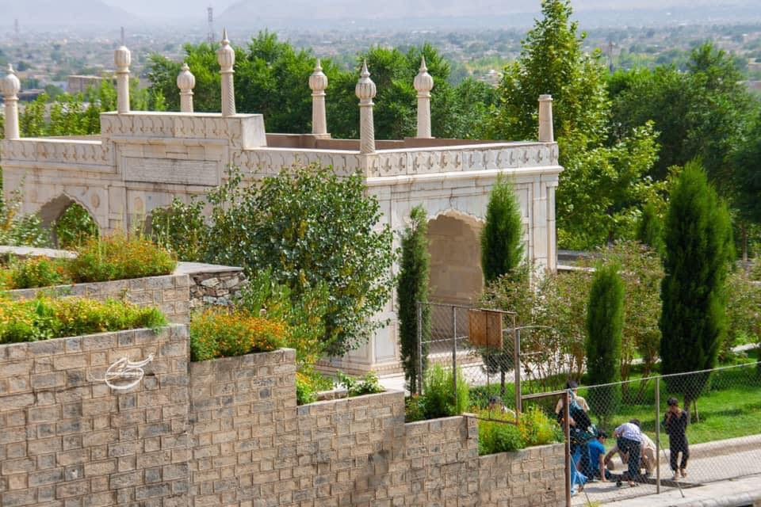
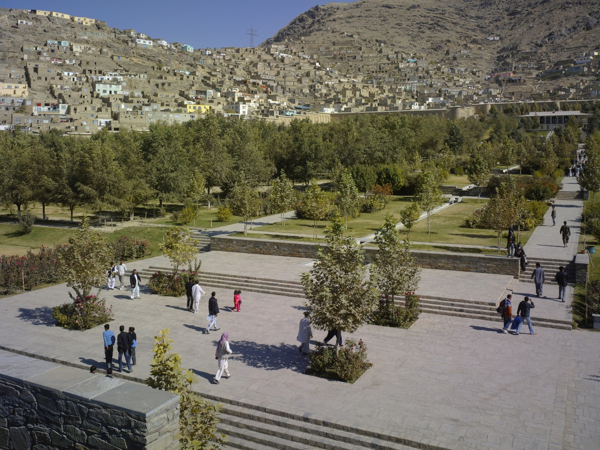

Babar Garden, Five hundred year old monument of Afghanistan Babar Garden was registered as a historical monument of Afghanistan in the UNESCO Cultural Heritage Organization in 2016. It is a historical and recreational garden as well as the tomb of Babur King Gurkhani, which is located in Kabul. one of the Gurkha kings known in the West as the Great Mongols of India. this garden was built around 1528 AD (935 AH) and still the garden is open for national and international visitors.

Spring

Autumn
